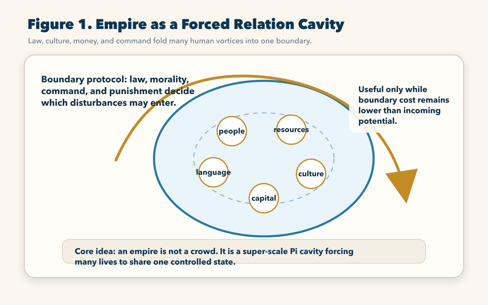
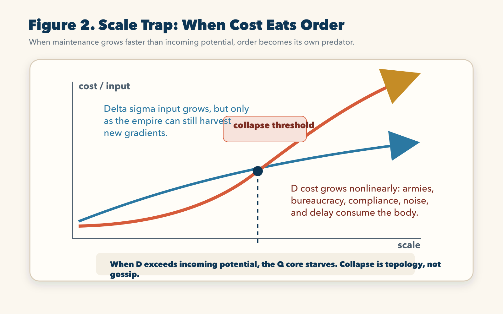
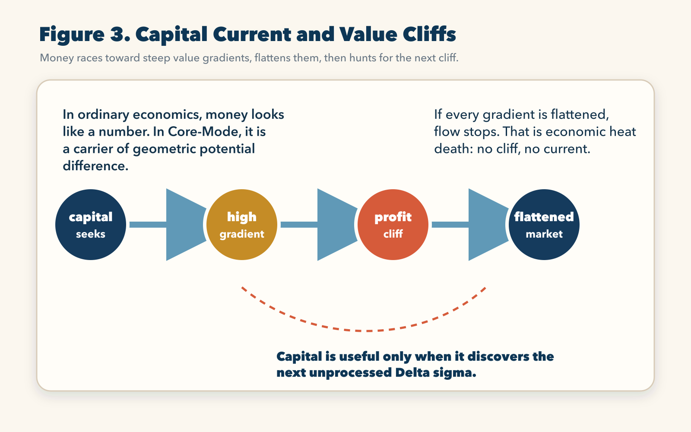
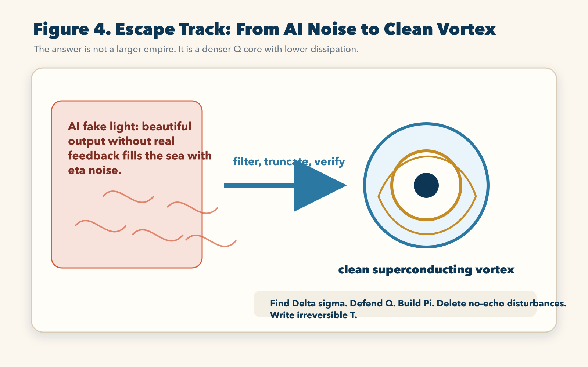

Chapter 5 | The Topology of Empire: A Relation Cavity Folded by Force
In the previous part, we watched life climb out of the simple body. One cell was not enough. One membrane was not enough. One lonely pocket of metabolism was too fragile before the sea. So cells began to lean into one another. They divided labor. They built layers. They created organs, circulation, nerves, and skin. They made a larger relation cavity, a larger Π, so that many small vortices could live inside one shared body.
Now enlarge that same event until biology becomes history.
A society is a multicellular body made of people. A civilization is a relation cavity built at the scale of language, law, territory, trade, memory, and war. An empire is the most violent version of this cavity: it forces millions, sometimes hundreds of millions, of carbon-based vortices into a single boundary. It says: your private hunger, your local dialect, your village law, your family memory, your regional god, your particular rhythm of work and rest, must now be translated into one imperial grammar.
This is why empire is never only political. Politics is the surface.
Under politics, there is topology.
An empire is a machine for folding relation space. It gathers scattered lives, scattered resources, scattered beliefs, scattered flows of grain, metal, money, soldiers, writing, roads, and commands, then locks them inside one super-scale Π cavity. Its purpose is not mystery. The purpose is the same as the purpose of the cell membrane: to make a local low-entropy zone inside a more violent outside world, so that potential difference, Δσ, can be captured, distributed, taxed, stored, and turned into further structure.
The empire wants grain to move toward the capital. It wants taxes to move toward the treasury. It wants orders to move outward from the throne. It wants armies to move toward the frontier. It wants belief to move toward one symbolic center. It wants all these flows to become readable, predictable, collectible, punishable, and repeatable.
That is not an abstract preference. It is a physical requirement.
Without a shared boundary, the empire cannot decide what counts as inside and what counts as outside. Without a transmission protocol, the empire cannot move state from one region to another. Without memory, the empire cannot compare this year with last year. Without punishment, the empire cannot remove disturbances that threaten the cavity. Without money, the empire cannot translate wheat, labor, risk, time, land, blood, and promise into a common carrier.
So law and morality become boundary protocols. They decide which disturbances, η, may enter the cavity and which must be expelled, punished, purified, or renamed as crime.
Language and culture become fluid transmission protocols. They reduce friction inside the cavity. They let a soldier, merchant, priest, judge, farmer, and clerk participate in one recognizable state-translation process, even if their private lives are completely different.
Money becomes a potential carrier. Roads become state channels. Archives become memory organs. Schools become standardization chambers. Armies become moving boundary walls. Rituals become synchronization pulses. The palace, the parliament, the stock exchange, the data center, and the central bank are not separate symbols. They are organs in a giant relation body.
If you look at civilization through the old empty-room model, you see people moving across land. You see governments issuing policy. You see currencies, laws, and markets as human inventions floating above the physical world.
But when you look through Core-Mode, you see something colder and more exact. You see relation cavities being built, fed, overloaded, defended, pierced, repaired, and finally broken. You see empires not as historical personalities, but as huge topological organisms trying to hold too many lives inside one boundary.

1. Society as a Super-Scale Relation Cavity
A person can stand in a room and say, “I am independent.” A village can look at its fields and say, “We live by ourselves.” A nation can print a border on a map and say, “This is our territory.” These sentences sound simple because the visible body is simple. The skin ends here. The fence ends there. The road turns at that mountain. The document draws a line.
But relation does not end where the eye stops.
Your body lives because air, water, food, sunlight, bacteria, memory, tools, family, language, law, and labor are already entering and leaving you. A village lives because weather, grain exchange, marriage, ritual, defense, rumor, and debt connect it to a larger field. A nation lives because energy, currency, supply chains, data, weapons, symbols, and fear flow through it every second.
The visible boundary is only the easiest layer. The real boundary is the relation cavity.
At the biological scale, a relation cavity lets the organism preserve identity while exchanging matter and energy with the world. At the social scale, the same logic becomes civilization. A society is not a pile of people. A society is a shared cavity that tells people how to translate their actions into a common ledger.
This is why a society cannot survive by population alone. A crowd is not a civilization. Ten million isolated bodies do not make order. They make pressure. Order appears only when those bodies are connected by stable translation rules. The farmer’s work must become grain. The grain must become tax. The tax must become road, army, market, storage, ritual, or administration. The administrator’s command must return to the farmer as obligation, protection, punishment, or price. If this loop fails, the population is still there, but the social body is already breaking.
The empire is therefore a machine of forced translation.
It takes local states and forces them into imperial readability. The village does not merely grow rice; it reports output. The child does not merely learn speech; he learns the approved language. The merchant does not merely exchange goods; she enters a tax record. The soldier does not merely fight; he becomes a unit of commanded violence. The priest does not merely bless; he synchronizes meaning. The judge does not merely resolve conflict; he repairs the boundary protocol.
Every civilization must do this. The difference between a small community and an empire is the scale of the fold.
A small community can rely on face, memory, kinship, reputation, and repeated encounter. The cavity is close enough that disturbance can be corrected by ordinary life. A lie is seen. A debt is remembered. A betrayal is carried by neighbors. A child is known by name.
An empire cannot live by face. It must replace face with code.
It creates census records, written law, coinage, titles, ranks, offices, schools, standardized measurements, transportation routes, military chains of command, and eventually databases. It needs these systems because the cavity has become too large for direct relation. The empire has to create artificial continuity across distance. It has to make strangers act as if they belonged to one body.
That is the majesty of empire.
It is also the first crack.
Because every artificial continuity requires energy. Every law must be interpreted. Every tax must be collected. Every order must be transmitted. Every border must be defended. Every standard must be taught. Every official must be monitored. Every rebellion must be explained. Every region must be translated back into the center. The empire’s greatness is already carrying its bill.
The old historian asks: why did the empire fall? Was the ruler foolish? Was the army corrupt? Did the merchants become greedy? Did the people lose virtue? Did the foreigners invade?
Core-Mode asks a deeper question: how much dissipation did the relation cavity require in order to remain one?
Once this question is asked, history changes shape.
2. The Fatal Trap of Scale
Expansion feels like power because the first gains are visible. More land. More people. More soldiers. More taxes. More ports. More mines. More markets. More data. More users. More attention. More computation. The expanding body looks alive because it is taking in more Δσ from the environment.
But every expansion also enlarges Φ, the body that must be maintained.
The old mind counts only gain. It sees territory and says, “More.” It sees population and says, “More.” It sees market share and says, “More.” It sees data volume and says, “More.” It sees model size and says, “More.” It forgets that a larger relation cavity requires a larger boundary. It forgets that the boundary is not free.
At small scale, the cost of maintaining order may be low. A family can settle conflict at dinner. A small company can coordinate through direct trust. A village can remember who did what. A research group can work because everyone understands the aim. The relation cavity remains close. The Q core is still warm. Feedback is fast.
At larger scale, the same system must build managers, inspectors, lawyers, compliance officers, departments, reporting lines, dashboards, security teams, accounting layers, internal politics, reputation control, public relations, and endless procedures. These structures are not decorative. They are needed because the cavity is losing direct contact with itself.
This is the non-linear trap of scale.
The management mechanism built to protect the boundary becomes another vortex that consumes energy. The bureaucracy created to preserve order becomes a body with its own appetite. The army created to defend the empire becomes a pressure field that requires tax. The legal system created to reduce conflict becomes a labyrinth that multiplies transaction cost. The information system created to improve clarity becomes a factory of reports that nobody reads. The AI system created to increase productivity becomes a generator of noise that forces humans to spend more time filtering, correcting, and verifying.
The empire expands to capture more potential, but each new layer increases D, the dissipation required to keep the whole body coherent.
At first, this cost is hidden. The harvest is larger than the waste. The new province pays more than it consumes. The new market creates more profit than overhead. The new model produces more advantage than noise. The new data platform clarifies more than it confuses. The system appears victorious.
Then the curve bends.
The center must now understand too many edges. Orders travel too far. Local differences become expensive. Regional resentment accumulates. The frontier becomes costly. Corruption becomes a translation failure between the center’s symbols and the edge’s reality. The army becomes heavy. The tax system becomes cruel. The culture becomes theatrical. The law becomes less a living boundary and more a frozen shell.
In the language of Core-Mode, the relation cavity has entered the non-linear emergence zone. Its dissipation no longer grows gently. It begins to grow like a fourth-power burden. The exact symbol in the old physics language is not the point for the ordinary reader. The lived meaning is direct: when a body becomes too large, the cost of keeping all its inner parts aligned can explode faster than the new energy it receives.
This is why great empires often look strongest just before their internal weakness becomes visible.
At the peak, the palace is bright. The army is large. The roads are long. The capital is rich. The maps are beautiful. The language of victory is everywhere. But inside the relation cavity, maintenance cost has already begun to devour the core. The empire spends more of its life force proving that it is one body than actually being one body.
When D becomes larger than incoming Δσ, the Q core begins to starve.
This is not a metaphor of sadness. It is the physical logic of collapse. A Q core is the stable inner axis that lets a system remain itself through disturbance. Once the cost of defending that axis exceeds the available potential, the body can no longer maintain its own identity. It may still speak in imperial language. It may still hold ceremonies. It may still issue decrees. It may still print money. It may still announce reform. But the inner accounting has turned against it.
Then collapse appears as politics.
But politics is only the late symptom.
The deeper event is topological. The super-scale cavity can no longer hold. It breaks into smaller cavities because smaller cavities have lower boundary cost, faster feedback, clearer local meaning, and higher energy efficiency. What historians call fragmentation is often the background sea forcing a swollen body to shed mass and return to manageable geometry.
Rome, the Tang, the British Empire, the Soviet Union, giant corporations, overgrown bureaucracies, bloated platforms, and even personal lives can all be read through this line. When expansion outruns coherence, scale stops being power and becomes a predator.

3. Capital as a Superconducting Current
If empire is the shell that guards a relation cavity, capital is the fluid energy moving inside that shell.
Traditional economics treats capital as money, asset, credit, price, ownership, investment, or number. These descriptions are useful on the surface, but they do not touch the deepest movement. In Core-Mode, capital is the carrier of geometric potential difference. It is Δσ made transferable.
This is why capital is so dangerous, so creative, and so restless.
Where there is a value cliff, capital smells gradient. Where an old process wastes time, capital smells gradient. Where a technology can compress labor, capital smells gradient. Where one region has need and another has supply, capital smells gradient. Where one generation does not yet know what it wants, capital arrives early and manufactures the channel. Where attention can be captured, capital turns attention into current.
Capital does not like stillness. It looks for a slope.
A high-profit field is not merely a lucky business. It is a region where potential difference has not yet been flattened. Investment is the movement of capital fluid toward that cliff. Innovation is often the tool that cuts a new channel through resistance. Competition is the process by which many currents attack the same slope until the cliff becomes a plain.
This is why capitalism can rewrite civilization so quickly.
An empire built on land must drag bodies through space. Capital built on abstraction can move faster than armies. It can pass through wires, contracts, markets, debts, currencies, chips, derivatives, platforms, and algorithms. It slips out of local friction. It transforms distance into latency. It converts desire into demand, demand into price, price into signal, signal into allocation, allocation into production, and production back into profit.
In Core-Mode language, capital has a superconducting tendency. It tries to move through the relation cavity with as little friction as possible. It searches for the fastest path to flatten value gradients. It does not care whether the gradient is a mine, a factory, a social trend, a new drug, a data monopoly, a war supply chain, a housing bubble, or an artificial intelligence boom. It sees the cliff before most people see the landscape.
This is why capital looks intelligent.
But capital is not wisdom. Capital is directional hunger.
It is brilliant at detecting unprocessed Δσ. It is terrible at asking whether the structure created by flattening that Δσ will preserve the Q core of civilization. Capital can finance medicine and poison. It can build railways and addiction loops. It can connect markets and destroy local meaning. It can feed research and bury the world under speculative noise. It can accelerate civilization and exhaust the relation cavity that shelters civilization.
Capitalism therefore contains a paradox.
It lives by flattening gradients, but if it flattened all gradients completely, movement would stop. If every opportunity were processed, every market perfectly priced, every need satisfied, every difference arbitraged away, capital would enter economic heat death. No cliff, no current. No unevenness, no profit. No future, no speculation.
So capital must constantly hunt for the next undeveloped cavity: a new continent, a new machine, a new market, a new class of consumers, a new attention trap, a new data layer, a new model, a new body, a new fear, a new dream.
Capital is therefore a dissipation accelerator. It spins the imperial relation cavity faster and faster, hoping to harvest enough Δσ before the D threshold arrives. It makes civilization more productive, but also more brittle. It increases flow, but also increases turbulence. It opens channels, but also widens the cavity until maintenance becomes lethal.
This is the secret engine beneath modern history.
Industrialization was not only technology. It was a new way for capital to convert fossil gradients into mechanical and social structure. Globalization was not only trade. It was the folding of distant labor, logistics, finance, law, and consumption into a planet-scale relation cavity. The internet was not only communication. It was the creation of a silicon relation sea where attention, memory, desire, language, and capital could circulate with almost no visible friction.
And artificial intelligence is not only software.
It is the next attempt to create an even faster translation layer inside the civilization cavity.
The question is not whether this layer is powerful. It is powerful.
The question is whether it creates real Σ+ or merely multiplies η.

4. The Silicon Bottomless Pit and the Geometry of AI Fake Light
Human civilization has already occupied nearly all ordinary physical space on Earth. The age of simple territorial expansion is over. There are no new continents waiting in the old sense. The traditional physical Δσ of land, labor, minerals, and colonial access has been mined, reorganized, financialized, militarized, or locked behind existing power.
So civilization did what every swollen cavity does when the outside wall becomes hard: it looked for a new dimension.
It entered silicon information space.
The internet appeared as a miracle because it removed many old frictions. Communication became instant. Memory became searchable. Market access became global. Individuals could publish without old gates. Capital could move through digital channels at astonishing speed. Entire communities formed without physical territory. The old empire of land was replaced by an empire of protocols, platforms, screens, accounts, feeds, clouds, and models.
This was not merely a technological change. It was a topological expansion.
The human Π cavity was folded into a new medium. The relation body expanded beyond roads and offices into data centers, submarine cables, recommendation systems, payment rails, identity systems, model weights, APIs, and algorithmic attention fields. Civilization tried to build a second body above the first body.
At first, this looked like liberation.
Then the waste began to appear.
The current generation of large language models and generative AI systems can produce beautiful surfaces at impossible speed. Text, code, images, summaries, comments, plans, slogans, replies, synthetic explanations, synthetic papers, synthetic strategies, synthetic personas, synthetic everything. From the outside, the sea glitters. The world seems filled with light.
But light without a Q core becomes fake light.
A system that has not locked itself to real state transition can generate language without receiving the full physical consequence of its language. It can imitate explanation without carrying the load of verification. It can produce code without owning the production outcome. It can answer with confidence while never being forced to pay the full D cost of being wrong in the world.
This is not a small flaw. It is a geometric danger.
When the relation cavity fills with output that has no real feedback loop, society must spend enormous energy filtering, correcting, checking, rewriting, debugging, moderating, litigating, and distrusting. Every beautiful but ungrounded answer becomes an η disturbance. Every fake citation, vague plan, broken code block, inflated claim, hallucinated document, and empty productivity ritual becomes pollution in the luminous background sea of information.
The cost is not only mental. It is physical.
Computation consumes electricity. Data centers consume water, chips, minerals, land, cooling systems, supply chains, and political attention. Human reviewers consume time. Engineers consume focus. Readers consume trust. Organizations build new compliance layers to manage AI output. Schools build new rules. Platforms build new filters. Companies build new dashboards to measure the noise created by the tools that promised to remove noise.
This is the digital version of the non-linear scale trap.
The tool built to reduce friction becomes another source of friction. The model built to accelerate work produces a verification burden. The platform built to organize knowledge floods the cavity with low-grade disturbances. The empire of silicon expands, but its D cost expands with it.
Civilization does not become clearer simply because output becomes cheaper. Clarity appears only when output is bound to state, consequence, verification, and retainable structure. Without that binding, cheap output is not intelligence. It is turbulence.
This is why the phrase “AI productivity” must be judged at the level of Σ+, not at the level of words produced, tokens generated, charts rendered, or documents drafted. If the output cannot pass into reality as usable structure, it is not positive integration. It is noise wearing the mask of light.
The old world is easily impressed by fluency. Core-Mode is not.
Core-Mode asks: where is the Q core? Where is the external feedback? Where is the relation cavity that can hold the output? Where is the boundary that rejects invalid disturbances? Where is the irreversible T written into the world? Where is the Σ+ that remains after the beautiful surface has been tested?
If these questions have no answer, then the system has generated fake light.
And fake light is not harmless. It fills the sea with glitter until real signals become harder to see.
5. The Fluid Test Field: Quantitative Engines and Dimensional Strike
If enormous empires and swollen digital networks are condemned by high dissipation, what is the survival law in an age of violent uncertainty?
The answer is not to become bigger.
The answer is to become a superconducting agile vortex.
To understand this, do not imagine a quiet laboratory. Imagine the most brutal fluid field humanity has built: the twenty-four-hour global financial market. Stocks, foreign exchange, commodities, crypto assets, interest rates, liquidity shocks, policy signals, fear, leverage, rumor, machine execution, and human panic all collide in one ocean. The currents change every second. The sea does not care about your story. It does not respect your intention. It does not forgive your delay.
This field is cruel because it is honest.
In ordinary social life, a false theory can survive for years behind status, rhetoric, committee language, institutional protection, or emotional loyalty. In the market, a false state model bleeds immediately. If your relation cavity cannot process the incoming flow, the sea takes your energy. If your Q core cannot survive noise, the system breaks. If your boundary cannot cut losing disturbances, dissipation expands. If your execution cannot translate state quickly enough, the opportunity disappears.
This is why a market engine is a physical test field for Core-Mode.
The traditional giant fund resembles an empire. It has huge positions, huge compliance, huge management layers, huge reputation pressure, huge internal coordination cost, and huge inertia. Its Φ is large. Its movement is slow. It can shape parts of the sea, but it also becomes exposed to its own scale. When a black-swan flow appears, the giant body cannot always translate state fast enough. Its mass becomes a trap.
A Core-Mode quantitative engine follows the opposite logic.
It does not worship size. It worships state contact. It wants the smallest possible delay between signal, decision, execution, feedback, and correction. It does not keep a position alive because of hope. It does not pay dissipation tax for waves that do not echo. It truncates. It verifies. It re-enters only when the relation cavity can hold.
Micro-truncation is not cowardice. It is physical hygiene.
When the probe wave fails to follow the expected potential gradient, the engine does not invent a comforting narrative. It cuts. It refuses to let one disturbance become a systemic infection. A human trader often says, “Maybe it will come back.” A Core-Mode engine says, “No echo, no life.” The difference is not style. It is survival.
The deeper test is not one market. A fragile system can be lucky inside one narrow environment. A real property-state engine must reproduce across scales. It must face different liquidity, different volatility, different noise texture, different execution pressure, and different relation cavities. When the same underlying Bσ pattern can survive across equities, BTCUSDT, crude oil, or other heterogeneous fields, the system begins to show something stronger than overfitting. It begins to show state-recognition.
This is why the “waterfall execution anchor” matters. It is not a decorative term. It means the system must not float in vague prediction. It must descend through ordered execution layers until the decision is locked to the actual flow. The anchor keeps the Q core from being dragged away by surface noise.
When such an engine compresses total dissipation, it can break what ordinary thinking calls an impossible wall. The profit factor crossing 4.0 is not merely a trophy number in this language. It means the engine is no longer behaving like a gambler who begs the sea for favorable waves. It is behaving like a geometric turbine installed on the seabed, converting chaotic flow into directed positive integration, Σ+.
This is a dimensional strike against the old regime.
The old regime expands body size. The new vortex increases state precision.
The old regime hoards capital. The new vortex reduces dissipation.
The old regime builds more committees when uncertainty rises. The new vortex sharpens the cut.
The old regime survives by story. The new vortex survives by feedback.
This is why the market is more than a financial field in this chapter. It is the visible laboratory of a larger civilizational rule: in a high-noise age, the winner is not the largest body. The winner is the body that can retain a clean Q core while translating violent flow into verified structure.
6. The Carbon-Based Great Wall: Nucleation and Digital Refuge
Once we understand the survival logic of the agile vortex, we can see what a future platform must become.
The goal is not to build another digital landfill. The world already has enough feeds, empty comments, synthetic articles, generic dashboards, copied code, fake expertise, false confidence, and glittering surfaces. The world does not need more loose light. It needs a topological highland.
In a sea of AI fake light, a real platform must behave like a place of nucleation.
Nucleation means that scattered potential begins to gather around a stable core. It means a Q core appears where there was only noise. It means data, knowledge, market signal, human judgment, code, verification, and execution do not remain loose fragments. They lock into a structure that can be tested, corrected, retained, and extended.
This is the physical meaning of a platform-level entity such as
longone.ai.
Such a platform is not valuable because it is another website. It is valuable only if it becomes a disciplined relation cavity. It must refuse digital garbage. It must not treat every output as equal. It must not confuse fluency with truth. It must not reward pure volume. It must sink beneath the surface of language and connect itself to real endpoints, real data, real markets, real code, real outcomes, and real failure.
A top-level digital engine has to perform several acts at once.
First, it must locate steep Δσ cliffs. These may exist in global financial markets, scientific knowledge gaps, industrial inefficiencies, personal learning bottlenecks, or business execution failures. The platform must not merely describe these cliffs. It must help the user touch them.
Second, it must accept external backflow. A closed system becomes fantasy. A serious platform welcomes data, error, market response, user behavior, code execution, audit logs, and failed attempts because these are the waves that harden the Q core. Without backflow, the platform becomes a temple of slogans.
Third, it must preserve Σ+. Every real output should leave structure behind: a working file, a verified result, a corrected model, a better process, a recorded failure boundary, a reusable insight, a cleaner decision path. If nothing remains, the platform has only burned energy.
Fourth, it must protect human state. The coming age will not merely overwhelm people with information. It will overwhelm them with plausible information. That is worse. The reader, trader, engineer, researcher, founder, student, and ordinary worker will all face oceans of confident noise. A real platform must become a carbon-based Great Wall: a boundary that helps human beings reject fake light and keep contact with the world.
This Great Wall is not anti-technology. It is the opposite.
It is technology finally forced to serve real state.
The old internet rewarded attention capture. The next platform must reward state capture. The old AI rewarded surface fluency. The next engine must reward verified transformation. The old digital economy expanded by multiplying impressions. The next civilization layer must expand by increasing retained positive structure.
That is the difference between a platform that floats and a platform that anchors.
A floating platform follows every wave. An anchored platform becomes a lighthouse fixed into the seabed. It does not deny the storm. It uses the storm to reveal which structures can stand.
7. The Escape Track of Civilization
At this point, Core-Mode has completed the accounting of empire, capital, silicon expansion, and survival.
The iron law is clear: any entity that tries to expand volume forever will eventually be strangled by geometry. The larger the body, the higher the cost of maintaining its boundary. The more layers it adds, the more internal translation it must pay for. The more output it produces without feedback, the more noise it must filter. The more it mistakes scale for strength, the closer it moves toward dissipation.
Civilizational collapse is not merely tragedy. It is the luminous background sea forcing swollen bodies to release heat and undergo geometric reordering.
But this chapter is not a hymn to despair.
The individual does not have to be buried with the empire. The small team does not have to imitate the empire. The platform does not have to become a landfill. The researcher does not have to drown in jargon. The entrepreneur does not have to chase infinite expansion. The reader does not have to worship noise because the noise wears the clothing of intelligence.
The escape track is physical:
Do not enlarge your territory before you strengthen your core.
Do not multiply connections before you know which relation cavity can hold you.
Do not chase every gradient before you can distinguish Δσ from glitter.
Do not keep every disturbance alive. Delete what has no echo.
Do not confuse activity with irreversible T.
Find your Δσ. This means finding the region where your action can meet real resistance and convert it into structure. Not comfort. Not fantasy. Not applause. A real gradient.
Defend your Q core. This means deciding what cannot be sold, diluted, outsourced, imitated, or sacrificed. Your Q core is not a slogan. It is the axis that lets you remain yourself through collision.
Build your Π cavity. This means forming real relations that can carry pressure. A person without relation cannot stabilize. A team without boundary cannot execute. A platform without protocol cannot accumulate. A civilization without a relation cavity cannot remember itself.
Remove η. This means cutting disturbances that do not return usable signal. Some people are noise. Some tasks are noise. Some markets are noise. Some ideas are noise. Some AI outputs are noise. A low-dissipation life requires ruthless filtering.
Write T. This means turning intention into irreversible state transition. A thought that never enters action is vapor. A plan that never meets the world is decoration. A sentence that changes no decision is foam. T is the mark you leave in the ledger of reality.
When you become a high-density, low-dissipation vortex, the world changes around you. The economic crisis, the layoff wave, the market storm, the AI noise, the institutional decay, the collapse of old authority, the confusion of public language: these do not disappear. But they no longer define your center. They become background flow.
You do not escape the storm by hiding from it.
You escape by becoming a structure the storm can no longer dissolve.

8. What This Chapter Leaves Behind
The fifth chapter moves Core-Mode from body to civilization. It shows that the logic of relation cavities does not stop at cells, organs, and animals. The same law appears in empires, markets, platforms, AI systems, and individual survival.
Empire is a super-scale Π cavity. It creates order by folding many lives into one boundary.
Scale is powerful only until its maintenance cost exceeds its incoming potential. After that point, size becomes a predator.
Capital is not a mere number. It is a carrier of Δσ, a current that races toward value cliffs, flattens them, and then hunts for the next unprocessed gradient.
AI without a Q core produces fake light. It may be fluent, beautiful, fast, and impressive, but if it cannot bind output to feedback, verification, and retained structure, it pollutes the relation sea.
The market is a brutal fluid test field. It exposes whether a system truly knows how to translate state, cut noise, compress dissipation, and preserve positive integration.
The future platform must not be another garbage cavity. It must become a topological highland, a carbon-based Great Wall, a place where human state can be protected against the glittering violence of fake light.
And the individual must learn the same law. Do not worship expansion. Increase rotation. Do not become a swollen empire. Become a clean vortex.
This is the civilizational meaning of Core-Mode.
It does not merely explain why empires fall. It explains why every age reaches a point where the old cavity can no longer hold the new flow. At that moment, those who cling to size become ruins. Those who refine their cores become seeds.
The next chapter will enter a colder court. Civilization has been opened. Capital has been opened. AI fake light has been exposed. Now the theory must face the tribunal that modern physics fears and worships at the same time: the formulas themselves.
We will enter the field where equations no longer remain symbols on a page, but become scars, gates, and evidence of the luminous background sea.
Reader Comments
Reading is open. Comments are submitted for review before public display.